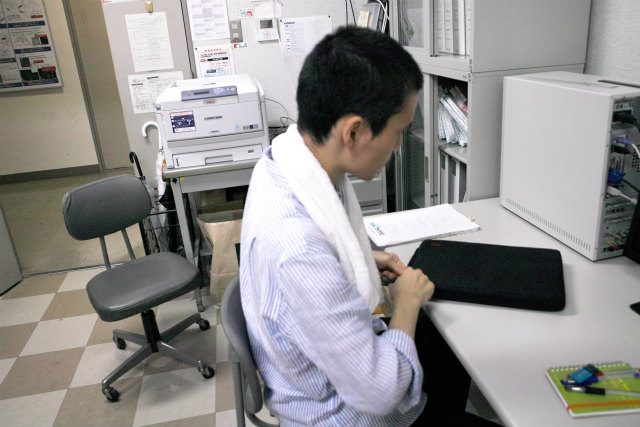
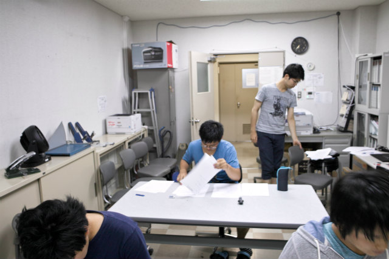

| ・ 大学院模試2017 (H29.07.28) | |||
去年に続いて今年も開催．1ヶ月前に実力を把握しておくことは有効でした．なんでも現状把握は大事ですが，進路はとくに結果次第で次の動きが変わります．今回は午前中に打合せがあり，当日の試験と同じ時間帯ではありませんが時間配分の目安になるとおもいます．出題はM1とM2有志． |
|||
|

試験監督は |
M1のK保西くん | ||
|
さて |
試験監督からの諸注意 | ||
|
時間まで待機 |
スタート | ||
|
問題選択の目利き |
次の専門までの休み時間 | ||
|
専門スタート |

マサヒロｗ | ||
|
外から見守る人 |
そっとじ | ||
|
答え合わせ |
採点方法 | ||
|
どう？ |
採点中 | ||
|
採点中 |
ぼくは判定試験だったから | ||
|
自己採点終わり |
6割はとってやｗ | ||
|
部分点なんかないよｗ |
慈悲はないｗ | ||
|
厳し目にみとこう |
まだ焦る時間では無いし | ||
|
原状復帰 |
可視化で買ってきたお土産たべる？ | ||